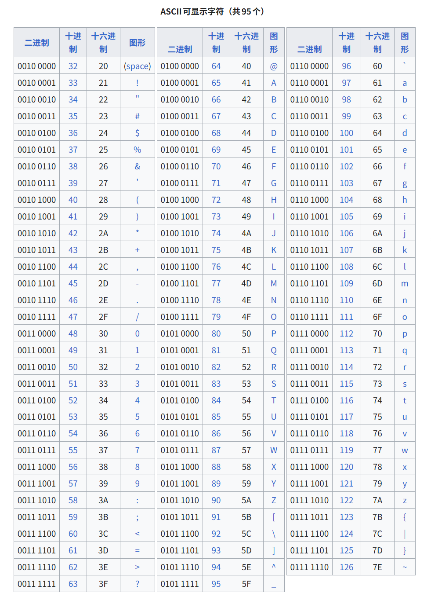
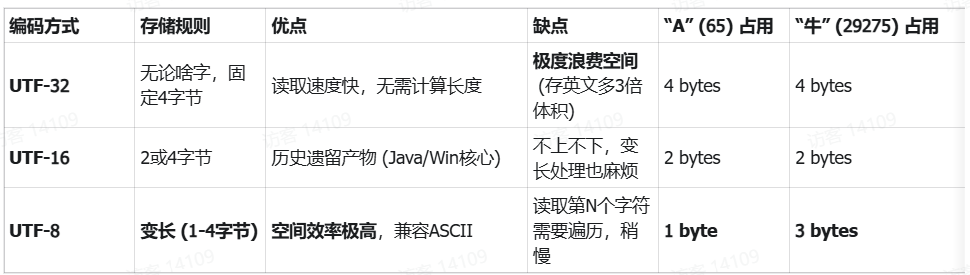
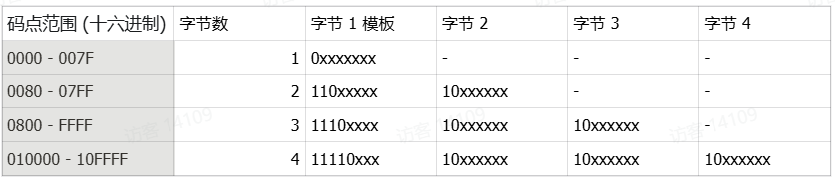
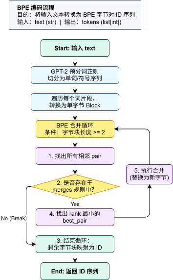

CS336 的学习笔记，参考了b站这就是小C_ 的视频和笔记。
字符本质：ASCII、Unicode与UTF-8编码 计算机为了使用二进制唯一标识某个字符，必须先有字符 -> 数字 的映射表，ASCII （American Standard Code for Information Interchange，美国信息交换标准代码）是早年的一套编码标准，它定义了26个基本拉丁字母、阿拉伯数字和英式标点符号的对应二进制编码。ASCII码只能用于现代美国英语，对于其它语言例如中文无能为力，为了解决这样的局限，Unicode产生。

Unicode （The Unicode Standard）也称作统一码、万国码，它在兼容ASCII的基础上为全球的所有字符包括emoji分配了一个唯一的ID，也称为码点 ，例如“A”对应十进制数65，“牛”对应0x725B。
解决了编号问题，还需要解决的问题是这个码点如何存储在内存中，转换为二进制后，数据长短不一，使用多少字节存储和计算机如何识别就是UTF解决的问题。UTF（Unicode Transformation Format）意为Unicode转换格式，最常用的是UTF-8，它使用了变长前缀编码方式，原理类似于计算机网络中划分子网的方式。

UTF-8通过控制位 和延续位 判断该字符占几个字节以及当前字节是否是开头，例如110开头表示后面还有一个字节，10开头表示当前字节是一个“从属字节”。

示例：以emoji👍为例，👍的码点是128077，对应的十六进制为0x1F44D，二进制为0001 1111 0100 0100 1101。
0x1F44D对应4字节模版：
1111 0xxx | 10xx xxxx | 10xx xxxx | 10xx xxxx
将码点转换后的二进制填充后得出结果（从后往前，有空填0）：
1111 0000 | 1001 1111 | 1001 0001 | 1000 1101
最后的结果即为F0 9F 91 8D。
1 2 3 4 5 6 7 8 >>> print (ord ('👍' ))128077 >>> print (hex (128077 ))0x1f44d >>> print (bin (128077 ))0b11111010001001101 >>> print ('👍' .encode('utf-8' ))b'\xf0\x9f\x91\x8d'
BPE算法原理与训练实现 本节主要围绕两个目标展开：一是理解BPE（Byte-Pair Encoding）的算法思想，二是不依赖transformers等现成库，亲手实现并训练一个基于BPE的分词器。
为什么需要Tokenizer 一个直观的问题是：既然UTF-8已经能把所有文本编码成0~255范围内的字节，为什么不能直接把原始字节丢给模型？核心原因是序列长度会变得过长。Transformer的Self-Attention计算复杂度与序列长度的平方相关，如果直接以字节作为输入单位，文本会被切得非常碎，计算量和显存占用都会明显上升。
例如单词Transformer本身占用11个字节。如果以字节为单位输入，序列长度就是11；如果它能够作为一个整体Token输入，序列长度就可以压缩为1。Tokenizer的本质作用，就是在词表大小 和序列长度 之间寻找平衡：把高频、稳定的字节组合打包成一个Token，从而减少模型实际看到的序列长度。
BPE是Tokenizer的一种主流实现方式。它不依赖人工词典，而是通过统计语料中相邻符号对的出现频率，反复合并最常见的符号对，让常见片段逐渐形成更长的Token。这样既保留了从字节出发的开放词表能力，也能对常见文本片段进行压缩。
BPE流程 BPE（Byte-Pair Encoding）的核心思想可以概括为一句话：从最小的符号单位开始，每次找到当前语料中出现频率最高的相邻符号对，并把它们合并成一个新的Token 。不断重复这个过程后，常见的文本片段会逐渐被压缩成更长的Token，而低频词、生僻词、新词仍然可以退回到更小的子词甚至字节表示。
训练流程通常如下：
初始化基础词表
先把0~255这256个字节放进基础词表。由于所有UTF-8文本最终都可以表示成字节序列（单字节或多字节），因此这种做法天然具备开放词表能力：无论是中文、英文、emoji、代码符号还是生僻字符，都能被编码，不会因为遇到未知字符而无法处理。
处理特殊Token
在正式训练之前，需要先确定是否存在特殊Token，例如：
1 2 3 4 <|endoftext|> <|pad|> <|bos|> <|eos|>
这些Token不是普通文本，而是带有控制语义 的标记。例如<|endoftext|>可以表示一段文本结束，<|pad|>可以用于补齐序列长度，<|bos|>和<|eos|>可以表示序列开始和结束。训练时必须把它们从普通语料中隔离出来，避免BPE把它们拆成零散片段，或者让它们和普通文本一起参与频率统计。训练完成后，再把这些特殊Token作为完整Token加入词表。
一些领域内具有稳定含义的专业名词，也可以根据任务需要进行类似处理。例如医学文本中的BRCA1、COVID-19，代码语料中的torch.nn.Module、std::vector，论文语料中的Self-Attention、LayerNorm等。如果这些词在任务中非常重要，并且希望模型把它们视为一个完整单元，就可以考虑将它们加入特殊Token或通过规则保护起来。不过特殊Token会占用词表空间，加入过多反而会削弱Tokenizer的通用性，因此一般只保留真正需要稳定表示的控制符号或高价值领域词。
预分词（Pre-tokenization）
在真正统计字节对频率之前，通常需要先做预分词。预分词会根据一组规则先把输入文本切成若干片段，避免BPE在不合适的边界上跨片段合并，产生违背直觉的Token。
例如不做预分词时，"您好 人没了"有可能被切成"您"、"好 人"、"没了"，其中"好 人"跨过了空格边界，语义和形式上都不自然。先按空格等规则预分词后，可以得到"您好"和"人没了"两个片段，再分别在片段内部继续分词，例如得到"您好"、"人"、"没了"，这样可以更好地约束Token边界。
GPT-2风格的Tokenizer通常会使用正则表达式进行预分词，把文本拆成字母串、数字串、标点、空白符等片段，并且常常把单词前面的空格和单词绑定在一起。例如：
可能会被预分词为：
1 ["Hello", " World", " test", "!"]
这一步不会产生最终Token，而是给后续BPE合并划定边界。也就是说，BPE只在预分词得到的片段内部统计和合并，不会随意跨越片段边界。
统计相邻符号对频率
预分词之后，每个片段会被转换成UTF-8字节序列。然后统计语料中所有相邻符号对的出现频率。例如当前有如下片段：
那么(t, h)出现3次，(h, e)出现2次，(h, a)出现1次，(a, t)出现1次。这里的频率统计会考虑片段在语料中的出现次数，出现越多的片段，对全局统计的影响越大。
合并最高频Pair
每一轮训练都会选择当前出现频率最高的相邻符号对，并把它合并成一个新Token。例如(t, h)最高频，就把它合并为th：
1 2 3 t h e -> th e t h e -> th e t h a t -> th a t
合并后，原来的符号序列发生变化，新的相邻符号对也会随之产生。因此BPE会继续在更新后的语料表示上统计pair频率，并进行下一轮合并。
重复直到达到目标词表大小
BPE会不断重复“统计pair频率 -> 选择最高频pair -> 合并为新Token”的过程，直到词表大小达到预设值，或者已经没有可以继续合并的pair。训练结束后，会得到两个核心结果：
一是vocab，也就是Token ID到字节序列的映射 ；二是merges，也就是按训练顺序记录下来的合并规则 。后续编码新文本时，不再重新统计频率，而是按照merges中的优先级应用这些合并规则。
总体来看，BPE本质上是一种数据驱动的文本压缩算法：常见片段被合并成更长的Token，从而缩短序列长度；不常见片段则保留为更细粒度的子词或字节，从而保证任何文本都可以被表示。
示例 沿用前面的极简例子，假设预分词后的片段是：
为了方便观察，这里暂时用字符来表示对应的单字节。实际的Byte-level BPE中，它们都会先被表示成UTF-8字节序列：
1 2 3 the -> t h e the -> t h e that -> t h a t
初始vocab包含全部0~255个单字节Token，其中一小部分可以写成：
1 2 3 4 ID 97 -> b"a" ID 101 -> b"e" ID 104 -> b"h" ID 116 -> b"t"
第一轮统计相邻pair频率：
1 2 3 the : (t, h), (h, e) the : (t, h), (h, e) that : (t, h), (h, a), (a, t)
因此：
1 2 3 4 (t, h) 出现 3 次 (h, e) 出现 2 次 (h, a) 出现 1 次 (a, t) 出现 1 次
最高频pair是(t, h)，于是第一条合并规则就是：
这条规则会被记录进merges：
1 2 3 merges = [ (b"t", b"h") ]
同时vocab中新增一个Token，例如：
语料表示随之更新为：
1 2 3 the -> th e the -> th e that -> th a t
第二轮重新统计pair。此时：
1 2 3 (th, e) 出现 2 次 (th, a) 出现 1 次 (a, t) 出现 1 次
最高频pair是(th, e)，于是继续合并：
此时merges变成：
1 2 3 4 merges = [ (b"t", b"h"), (b"th", b"e") ]
vocab继续新增：
语料表示更新为：
1 2 3 the -> the the -> the that -> th a t
如果继续训练，下一轮可能会把(th, a)合并为tha，再把(tha, t)合并为that。这样最终vocab的一部分可能长这样：
1 2 3 4 5 6 7 8 ID 97 -> b"a" ID 101 -> b"e" ID 104 -> b"h" ID 116 -> b"t" ID 256 -> b"th" ID 257 -> b"the" ID 258 -> b"tha" ID 259 -> b"that"
对应的merges可能是：
1 2 3 4 (b"t", b"h") -> b"th" (b"th", b"e") -> b"the" (b"th", b"a") -> b"tha" (b"tha", b"t") -> b"that"
可以看到，vocab和merges关注的是两个不同问题：
vocab回答的是：某个Token ID对应什么字节序列 。例如ID 257 -> b"the"。
merges回答的是：编码新文本时应该按照什么顺序合并字节或子词 。例如先把b"t"和b"h"合并成b"th"，再把b"th"和b"e"合并成b"the"。
例如编码新文本the时，初始表示是：
按照merges中的规则依次合并：
最后再查vocab，就可以得到：
如果编码that，初始表示是：
按照上面的合并规则，可以得到：
1 2 3 4 t h a t -> th a t -> tha t -> that
最后得到：
如果某个词没有被完整合并成一个Token，也没有关系。BPE会使用已经学到的最长可用片段进行表示；如果连子词都匹配不上，也可以退回到底层字节Token。这就是Byte-level BPE既能压缩常见文本，又能覆盖任意UTF-8文本的原因。
代码 train_bpe.py
1 2 3 4 5 6 7 8 9 10 11 12 13 14 15 16 17 18 19 20 21 22 23 24 25 26 27 28 29 30 31 32 33 34 35 36 37 38 39 40 41 42 43 44 45 46 47 48 49 50 51 52 53 54 55 56 57 58 59 60 61 62 63 64 65 66 67 68 69 70 71 72 73 74 75 76 77 78 79 80 81 82 83 84 85 86 87 88 89 90 91 92 93 94 95 96 97 98 99 100 101 102 103 104 105 106 107 108 109 110 111 112 113 114 115 116 117 118 119 120 121 122 123 124 125 126 127 128 129 130 131 132 133 134 135 136 137 138 139 140 141 142 143 144 145 146 147 148 149 150 151 152 153 154 155 156 157 158 159 160 161 162 163 164 165 166 167 168 169 170 171 172 173 174 175 176 177 178 179 180 181 182 183 184 185 186 187 188 189 190 191 192 193 194 195 196 197 198 199 200 201 202 203 204 205 206 207 208 209 210 211 212 213 214 215 216 217 218 219 220 221 222 223 224 225 226 227 228 229 230 231 232 233 234 235 236 237 238 239 240 241 242 243 244 245 246 247 248 249 250 251 252 253 254 255 256 257 258 259 260 261 262 263 264 265 266 267 268 269 270 271 272 273 274 275 276 277 278 279 280 281 282 283 284 285 286 287 288 289 290 291 292 293 294 295 296 297 298 299 300 301 302 import osfrom collections import defaultdict, Counterimport regex as re import jsondef train_bpe ( input_path: str | os.PathLike, vocab_size: int , special_tokens: list [str ], tuple [dict [int , bytes ], list [tuple [bytes , bytes ]]]: """ 训练字节级 BPE (Byte-Pair Encoding) 分词器。 该函数 BPE 算法的核心流程： 1. 初始化词表为所有可能的字节 (0-255)。 2. 读取输入语料，并根据特殊 Token 进行切分，确保特殊 Token 不参与统计。 3. 使用 GPT-2 的预分词正则将语料库切分成单词，并统计每个单词的频率。 4. 迭代进行“合并”操作，直到达到目标词表大小。 - 合并策略：总是选择当前出现频率最高、且在字典序上最大的字节对。 5. 使用倒排索引优化合并过程中的频率更新，确保速度。 6. 将合并产生的 Token 加入词表，并最终加入特殊 Token。 返回: tuple[dict[int, bytes], list[tuple[bytes, bytes]]]: vocab: 训练好的词汇表，映射 Token ID -> Token 字节序列。 merges: BPE 合并规则列表，按生成顺序排列。 """ vocab = {i: bytes ([i]) for i in range (256 )} num_merges = vocab_size - 256 - len (special_tokens) with open (input_path, "r" , encoding="utf-8" ) as f: text = f.read() """ For special_tokens: 在训练时，必须保证特殊 Token 不参与频率统计。 代码逻辑： 切割语料：在开始统计词频之前，利用正则将语料库在特殊 Token 处切开。 独立统计：只对切分出来的普通文本片段进行 BPE 统计。 最后加入：训练结束后，强制将特殊 Token 加入词表（通常放在最后），确保它们有 ID。 """ if special_tokens: special_regex = "|" .join(re.escape(t) for t in special_tokens) parts = re.split(f"({special_regex} )" , text) train_segments = [p for p in parts if p not in special_tokens] else : train_segments = [text] gpt2_pat = re.compile (r"""'(?:[sdmt]|ll|ve|re)| ?\p{L}+| ?\p{N}+| ?[^\s\p{L}\p{N}]+|\s+(?!\S)|\s+""" ) raw_counts = Counter() for segment in train_segments: words = gpt2_pat.findall(segment) for word in words: """ 对于 "Hi"： word.encode("utf-8") 得到 b'Hi'。 for b in b'Hi' 会遍历出整数 72 和 105。 bytes([b]) 把整数变回单字节对象：b'H' 和 b'i'。 最终组成元组：(b'H', b'i')。 为什么必须是元组（tuple）？ 因为 Counter 的键（key）必须是不可变的。list 不能做键，而 tuple 可以。 举例： raw_counts = { (b'H', b'i'): 50, (b' ', b't', b'h', b'e', b'r', b'e'): 100, (b'!'): 50, (b'\xe4',b'\xbd',b'\xa0',b'\xe5',b'\xa5',b'\xbd'):20, # 你好 } """ raw_counts[tuple (bytes ([b]) for b in word.encode("utf-8" ))] += 1 words_list = [] counts_list = [] for word_tuple, freq in raw_counts.items(): words_list.append(list (word_tuple)) counts_list.append(freq) stats = defaultdict(int ) indices = defaultdict(set ) for idx, word in enumerate (words_list): freq = counts_list[idx] for i in range (len (word) - 1 ): pair = (word[i], word[i+1 ]) stats[pair] += freq indices[pair].add(idx) merges = [] for _ in range (num_merges): if not stats: break best_pair = max (stats.items(), key=lambda x: (x[1 ], x[0 ]))[0 ] if stats[best_pair] <= 0 : break merges.append(best_pair) new_token = best_pair[0 ] + best_pair[1 ] relevant_indices = list (indices[best_pair]) for idx in relevant_indices: word = words_list[idx] freq = counts_list[idx] i = 0 while i < len (word) - 1 : if word[i] == best_pair[0 ] and word[i+1 ] == best_pair[1 ]: if i > 0 : prev_pair = (word[i-1 ], word[i]) stats[prev_pair] -= freq if stats[prev_pair] == 0 : """ stats 字典里依然会存在这个键：{(b'x', b'y'): 0}。 当训练快结束，或者剩下的所有对频率都降为 0 时，max 函数依然会扫描这些值为 0 的项。 根据平局规则，如果存在多个频率为 0 的项，max 会返回其中字典序最大的那一个，这是错误的 """ del stats[prev_pair] if i < len (word) - 2 : next_pair = (word[i+1 ], word[i+2 ]) stats[next_pair] -= freq if stats[next_pair] == 0 : del stats[next_pair] word[i] = new_token del word[i+1 ] if i > 0 : new_prev = (word[i-1 ], word[i]) stats[new_prev] += freq indices[new_prev].add(idx) if i < len (word) - 1 : new_next = (word[i], word[i+1 ]) stats[new_next] += freq indices[new_next].add(idx) else : i += 1 if best_pair in stats: del stats[best_pair] if best_pair in indices: del indices[best_pair] for pair in merges: new_id = len (vocab) vocab[new_id] = pair[0 ] + pair[1 ] for s_tok in special_tokens: s_bytes = s_tok.encode("utf-8" ) vocab[len (vocab)] = s_bytes return vocab, merges def bytes_to_unicode (): """ 创建一个映射，将 0-255 字节映射为一组可见的 Unicode 字符。 这是 GPT-2 源码中的标准做法。 """ bs = list (range (ord ("!" ), ord ("~" ) + 1 )) + list (range (ord ("¡" ), ord ("¬" ) + 1 )) + list (range (ord ("®" ), ord ("ÿ" ) + 1 )) cs = bs[:] n = 0 for b in range (256 ): if b not in bs: bs.append(b) cs.append(256 + n) n += 1 cs = [chr (n) for n in cs] return dict (zip (bs, cs)) def save_tokenizer_files (vocab, merges, out_dir ): os.makedirs(out_dir, exist_ok=True ) byte_encoder = bytes_to_unicode() json_vocab = { k: "" .join(byte_encoder[b] for b in v) for k, v in vocab.items() } with open (os.path.join(out_dir, "vocab.json" ), "w" , encoding="utf-8" ) as f: json.dump(json_vocab, f, indent=4 ) with open (os.path.join(out_dir, "merges.txt" ), "w" , encoding="utf-8" ) as f: for p1, p2 in merges: s1 = "" .join(byte_encoder[b] for b in p1) s2 = "" .join(byte_encoder[b] for b in p2) f.write(f"{s1} {s2} \n" ) def main (): input_path = "data/TinyStoriesV2-GPT4-train.txt" vocab_size = 10000 special_tokens = ["<|endoftext|>" ] output_dir = "data/TinyStoriesV2-GPT4-train" print (f"开始训练 BPE 分词器 (目标词表大小: {vocab_size} )..." ) print ("这可能需要几分钟，具体取决于你的 CPU 速度和倒排索引的效率。" ) vocab, merges = train_bpe(input_path, vocab_size, special_tokens) save_tokenizer_files(vocab, merges, output_dir) if __name__ == "__main__" : main()
完整tokenizer类的封装
vocab回答的是：某个 Token ID 对应什么字节序列 。
merges回答的是：编码新文本时，应该按照什么顺序合并字节或子词 。
在使用 BPE 算法得到 vocab（词表）和 merges（合并规则）后，还需要把训练结果封装成一个完整的 Tokenizer。这个类需要完成两件事：一是把原始字符串转换为 Token ID 列表，也就是编码（Encode） ；二是把 Token ID 列表还原为字符串，也就是解码（Decode） 。
完整的 Tokenizer 还需要处理特殊 Token，例如 <|endoftext|>。这类 Token 带有控制语义，编码时应该被优先识别并直接映射为对应的 ID，而不是被普通的 BPE 流程继续拆分。
编码（Encode） 编码的输入是一个字符串，输出是一个 list[int]。它的核心原则是：严格按照训练阶段得到的 merges 顺序进行合并 。由于越早加入 merges 的规则优先级越高，所以编码时会选择 rank 最小的 pair 先合并。
对于不包含特殊 Token 的普通文本，编码流程可以概括为：
1 2 3 4 5 6 while true: 1. 找出当前序列中所有相邻的 pair 2. 检查这些 pair 是否出现在 merges 规则中 3. 如果都不在，停止循环 4. 如果有多对 pair 可以合并，选择 rank 最小的 best_pair 5. 执行合并：将当前序列中所有 best_pair 替换为合并后的字节块
这里要注意，合并过程中操作的是字节块，而不是最终的 Token ID。只有当某个预分词片段已经无法继续合并时，才会把当前得到的字节块逐个拿到 vocab 中查询，转换成对应的 ID。
如果文本中包含特殊 Token，则需要先把特殊 Token 和普通文本切开：特殊 Token 直接查表得到 ID；特殊 Token 之间的普通文本，再走 GPT-2 预分词和 BPE 合并流程。

解码（Decode） 解码的输入是一个 Token ID 列表，输出是一个字符串。相比编码，解码流程更直接：
1 2 3 1. 遍历当前 ID 列表，从 vocab 中找到每个 ID 对应的 bytes 2. 将所有 bytes 按顺序拼接成一个完整的字节流 3. 调用 decode("utf-8", errors="replace") 还原为字符串
解码时可能会遇到不合法的 UTF-8 字节流。更准确地说，模型生成的是 Token ID 序列；解码时，这些 ID 会先通过 vocab 映射回对应的字节块，再拼接成完整字节流。如果字节流刚好被截断，或者不是合法的 UTF-8 编码，直接调用 decode("utf-8") 就会抛出 UnicodeDecodeError。
例如，👍 对应的 UTF-8 字节是 b'\xf0\x9f\x91\x8d'，这是一个 4 字节序列。如果只拿到前两个字节 b'\xf0\x9f'，直接解码就会报错。解决方法是在解码时使用 errors="replace"，让 Python 用 Unicode 替换字符 � 代替非法字节片段。
1 return full_bytes.decode("utf-8" , errors="replace" )
代码 tokenizer.py
1 2 3 4 5 6 7 8 9 10 11 12 13 14 15 16 17 18 19 20 21 22 23 24 25 26 27 28 29 30 31 32 33 34 35 36 37 38 39 40 41 42 43 44 45 46 47 48 49 50 51 52 53 54 55 56 57 58 59 60 61 62 63 64 65 66 67 68 69 70 71 72 73 74 75 76 77 78 79 80 81 82 83 84 85 86 87 88 89 90 91 92 93 94 95 96 97 98 99 100 101 102 103 104 105 106 107 108 109 110 111 112 113 114 115 116 117 118 119 120 121 122 123 124 125 126 127 128 129 130 131 132 133 134 135 136 137 138 139 140 141 142 143 144 145 146 147 148 149 150 151 152 153 154 155 156 157 158 159 160 161 162 163 164 165 166 167 168 169 170 171 172 173 174 175 176 177 178 179 180 181 182 183 184 185 186 187 188 189 190 191 192 193 194 195 196 197 198 199 200 201 202 203 204 205 206 207 208 209 210 211 212 213 214 215 216 217 218 219 220 import regex as re from collections.abc import Iterable""" For special_tokens: 推理/编码阶段 (Tokenizer.encode) 在模型使用分词器将文本转为 ID 时，必须优先匹配特殊 Token。 代码逻辑： 正则匹配：构建一个包含所有特殊 Token 的正则表达式。 优先级：先扫描文本，一旦发现特殊 Token，直接将其转为对应的 ID。 普通处理：特殊 Token 之间的文本，再走正常的 GPT-2 预分词和 BPE 合并流程。 """ class BPETokenizer : """ 字节级 BPE（Byte-Pair Encoding）分词器实现。 该分词器将任意字符串编码为整数 ID 序列，并能将 ID 序列还原。 它采用字节级处理，确保不会出现未知词（OOV）错误。 """ def __init__ (self, vocab: dict [int , bytes ], merges: list [tuple [bytes , bytes ]], special_tokens: list [str ] | None = None ): """ 初始化分词器。 参数: vocab: 词汇表，建立整数 ID 到 字节块(bytes) 的映射。 merges: 合并规则列表。列表中的每一项是一个二元组 (bytes_a, bytes_b)， 表示在训练过程中 bytes_a 和 bytes_b 被合并的顺序。 special_tokens: 特殊标记列表（如 <|endoftext|>），这些标记不会被 BPE 规则拆分。 """ self .vocab = vocab self .id_to_byte = vocab self .byte_to_id = {v: k for k, v in vocab.items()} self .merges = {pair: i for i, pair in enumerate (merges)} self .special_tokens = special_tokens or [] if self .special_tokens: sorted_special = sorted (self .special_tokens, key=len , reverse=True ) special_pattern = "|" .join(re.escape(t) for t in sorted_special) self .special_regex = re.compile (special_pattern) else : self .special_regex = None self .gpt2_pat = re.compile (r"""'(?:[sdmt]|ll|ve|re)| ?\p{L}+| ?\p{N}+| ?[^\s\p{L}\p{N}]+|\s+(?!\S)|\s+""" ) def encode (self, text: str ) -> list [int ]: """ 将输入的原始字符串编码为整数 ID 列表。 该方法的核心逻辑是： 1. 作为一个“协调者”，它负责处理文本中的“特殊标记（Special Tokens）”和“普通文本”。 2. 特殊标记（如 <|endoftext|>）被视为原子，直接映射为 ID，不参与 BPE 的拆分和合并。 3. 普通文本片段则被交给底层逻辑执行预分词和 BPE 算法。 参数: text: 需要编码的原始字符串（例如 "Hello<|end|>World"）。 返回: list[int]: 编码后的整数 ID 序列。 """ if not text: return [] if not self .special_regex: return self ._encode_text_segment(text) tokens = [] last_pos = 0 for match in self .special_regex.finditer(text): pre_text = text[last_pos:match .start()] if pre_text: tokens.extend(self ._encode_text_segment(pre_text)) special_tok = match .group() tokens.append(self .byte_to_id[special_tok.encode("utf-8" )]) last_pos = match .end() remaining_text = text[last_pos:] if remaining_text: tokens.extend(self ._encode_text_segment(remaining_text)) return tokens def _encode_text_segment (self, text: str ) -> list [int ]: """ 内部核心函数：对不含特殊 Token 的纯文本片段应用 BPE 合并逻辑。 """ ids = [] pre_tokens = self .gpt2_pat.findall(text) for p_tok in pre_tokens: byte_parts = [bytes ([b]) for b in p_tok.encode("utf-8" )] while len (byte_parts) >= 2 : best_pair = None min_rank = float ('inf' ) for i in range (len (byte_parts) - 1 ): pair = (byte_parts[i], byte_parts[i+1 ]) if pair in self .merges: rank = self .merges[pair] if rank < min_rank: min_rank = rank best_pair = pair if best_pair is None : break new_byte_parts = [] i = 0 while i < len (byte_parts): if i < len (byte_parts) - 1 and (byte_parts[i], byte_parts[i+1 ]) == best_pair: new_byte_parts.append(best_pair[0 ] + best_pair[1 ]) i += 2 else : new_byte_parts.append(byte_parts[i]) i += 1 byte_parts = new_byte_parts for part in byte_parts: ids.append(self .byte_to_id[part]) return ids def decode (self, ids: list [int ] ) -> str : """ 将 ID 列表解码为原始字符串。 """ byte_segments = [self .id_to_byte[i] for i in ids] full_bytes = b"" .join(byte_segments) return full_bytes.decode("utf-8" , errors="replace" ) def encode_iterable (self, iterable: Iterable[str ] ) -> Iterable[int ]: """ 内存高效的迭代编码器。 参数: iterable: 一个可迭代的字符串对象（例如文件句柄）。 返回: 一个生成器，逐个产出编码后的 ID。用于处理无法一次性读入内存的大文件。 """ for chunk in iterable: yield from self .encode(chunk)